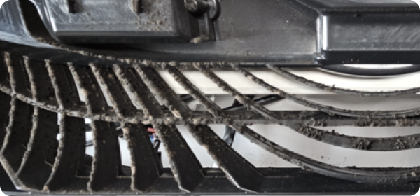
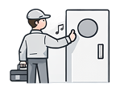
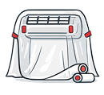
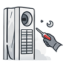
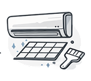
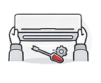
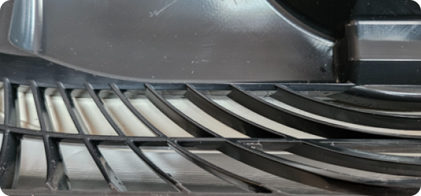

케어 전

겉으로는 깨끗해 보였지만,
에어컨 전면부를 분리하는 순간
깜짝 놀랐어요.막상 내부를 보니 열교환기,
송풍 팬 곳곳에 먼지와 곰팡이가
잔뜩 내려앉아 있더라고요.
셀프 청소만으로는 관리에 한계가
있다는 걸 실감했어요.
- 내부에 켜켜이 쌓인 먼지와 곰팡이
- 냉방 시 미묘하게 느껴지는 냄새
- 예전보다 약해진 듯한 바람 세기
눈에 보이지 않는 곳까지 깨끗해야 안심할 수 있는 에어컨, 배옥진 기자님의 실제 리뷰를 통해
구독 전문 케어 서비스의 체계적인 관리를 경험해 보세요.

REVIEW
- 전자신문 배옥진 기자님 -





케어 전

겉으로는 깨끗해 보였지만,
에어컨 전면부를 분리하는 순간
깜짝 놀랐어요.막상 내부를 보니 열교환기,
송풍 팬 곳곳에 먼지와 곰팡이가
잔뜩 내려앉아 있더라고요.
셀프 청소만으로는 관리에 한계가
있다는 걸 실감했어요.
케어 후

9년 동안 묵은 때가 말끔하게 정리되는
걸 보니,
이래서 전문가의 관리가
필요하구나 싶었어요.오래 사용해 온 에어컨을 앞으로도
잘 쓸 수 있겠다는
생각에
만족감이 컸습니다.
* 에어컨 가전 구독 및 케어십은 프리미엄, 라이트 플러스 상품 중 선택 가능하며, 신청 가능한 서비스가 상이합니다.
* 프리미엄 : 분해 세척 케어 서비스, 제품 성능 점검, 필터 클리닝 및 교체, 무상 A/S 제공
* 라이트플러스 : 기본 세척 케어 서비스, 제품 성능 점검, 필터 클리닝 및 교체, 무상 A/S 제공
TIP
에어컨 청소 시기가 고민되신다면,
아래 항목에 해당하는지 확인해 보세요.
냉방 할 때마다 불쾌한 냄새가 날 때

바람 세기가 약해졌다고 느껴질 때
필터에 먼지가 눈에 띄게 쌓였을 때
구매 후 1년 이상 청소하지 않았을 때
Care Service
가전 구독 시, 제품을 더 오래 더 깨끗하게 사용할 수 있도록
LG전자 가전 케어 전문가가 정기 방문하여 관리하는 서비스


구독 방식으로
구매 부담 최소화
교체 주기에 따른 필터와
소모품 정기 관리
에어컨을 깨끗하게 사용할 수
있도록 서비스 제공
연 1회 설치 환경 냉방, 배수 등의
성능 점검 진행
가전 구독 기간 내
제품 고장 시 무상 A/S 제공
* 소비자의 이해를 돕기 위해 연출된 이미지이며, 제품별 색상 및 스펙은 다를 수 있습니다.
* 무상 A/S는 고객 과실로 이한 제품 고장 및 훼손은 제외되며, 가전구독 고객에 한해 제공합니다.
* 무상 A/S는 케어십에는 제공되지 않습니다.